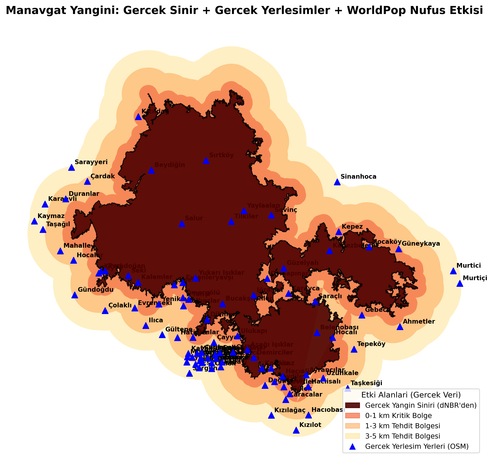

Arazi üzerinde 3B şiddet haritası
Kopernikus sayısal yükseklik modeli üzerine giydirilmiş dNBR katmanı, Toros eteklerinden kıyıya inen bir kamera rotasıyla (ArcGIS Pro Local Scene + Animation).
On günde kül olan bir Akdeniz ormanı
28 Temmuz 2021'de Antalya'nın Manavgat ilçesinde başlayan ve on gün süren orman yangını, Cumhuriyet tarihinin en büyük orman yangını felaketi olarak kayıtlara geçti. Bu çalışma, Sentinel-2 uydu görüntüleri ve çok-bantlı analiz yöntemleriyle yangının bıraktığı mekansal etkiyi haritalandırıyor, doğanın yıllar içindeki iyileşmesini izliyor, insan ve karbon etkisini ölçüyor ve gelecekteki riski yalnızca gerçek veriyle doğrulanan değişkenlerle modelliyor.
Yanan alan rakamı (60.128 ha) tek başına üretilmedi — bağımsız bir uydu çalışmasının (56.663 ha) ve Antalya Orman Bölge Müdürlüğü'nün açıkladığı rakamın (75.000 ha) arasına düşecek şekilde, ham sınıflandırmadaki gürültü ayıklanarak elde edildi.
dNBR ile ölçülen tahribat: sarıdan bordoya
Normalize Edilmiş Yanma Oranı Farkı (dNBR), yakın kızılötesi (B08) ve kısa dalga kızılötesi (B12) bantları kullanılarak hesaplandı; su, bulut ve tarım-kaynaklı yanlış-pozitifler bitişik-alan analizi ile ayıklandı.

Anormal sıcak, tipik kurak bir Akdeniz yazı
2015–2020 ortalamasıyla karşılaştırıldığında, asıl anomali sıcaklıktı (+1,8°C) — yağış farkı (-0,8 mm) ihmal edilebilir düzeydeydi. Yangın günlerinde baskın rüzgar kuzeyden esip kıyıya doğru yayılmayı hızlandırdı.


Varsayımları atmadan önce, gerçek veriyle sınadık
Bir risk modeli kurmadan önce, üç yaygın varsayımı 2021'in gerçek yanma verisiyle test ettik. Sonucu ne çıkarsa, model onu yansıttı — çıkmayanı çıkardık.
Güney bakılı yamaçlar daha şiddetli yanar
Ortalama gerçek dNBR: güney 0,436 · doğu/batı 0,409 · kuzey 0,364
Dik eğim daha şiddetli yanmayla ilişkilidir
Örüntü düzensiz çıktı: orta eğim 0,433 > dik 0,395 > düz 0,379 — tutarlı bir ilişki yok. Modelden çıkarıldı.
Yoğun bitki örtüsü (yüksek NDVI) daha fazla yakıt taşır
Yangın-öncesi NDVI, şiddetle birlikte düzenli arttı: yanmamış 0,42 → yüksek şiddet 0,70


Yangının 5 km içinde 134.676 kişi
Gerçek yangın sınırı (dNBR'den çıkarılan tekil ana yangın lekesi), OpenStreetMap'ten alınan 175 gerçek yerleşim noktası ve WorldPop 2020 nüfus verisi kullanılarak — uydurma bir daire veya örnek koordinatlar değil.

Tahmini 2,97 milyon ton CO2
IPCC 2006 AFOLU yöntemi (Alan × Biyokütle × Yanma Faktörü × Emisyon Faktörü) — biyokütle girdisi genel bir varsayım değil, ESA CCI Biomass'ın 2020 uydu verisinden, bu ormana özgü ölçüm.

Doğanın küllerden dönüşü
Üç yılın NBR (bitki örtüsü sağlığı) haritaları, birebir aynı renk skalasında (-1 ile 0,7 arası) sembolize edildi — aksi halde bir yıldan diğerine renk farkı, gerçek iyileşmeyle karıştırılabilirdi.


Yalnızca doğrulanan iki değişkenle
Bölüm 5'teki doğrulamaya dayanarak: bakı (%50) + bitki örtüsü yoğunluğu / yakıt yükü (%50). Eğim, gerçek veriyle tutarlı çıkmadığı için modelde yok. Kapsam yalnızca yanmış alanla sınırlı değil — henüz yanmamış çevre ormanı da içeriyor.

Veri doğrulamanın kendisi bir bulgudur
2021 Manavgat Yangını, iklim değişikliğinin orman ekosistemleri üzerindeki yıkıcı etkisini net biçimde gösterdi. Bu çalışmada her bulgu — yanan alan, meteorolojik anomali, risk faktörleri, insan etkisi, karbon salımı — gerçek veriyle ölçüldü veya doğrulandı; doğrulanamayan varsayımlar (eğimin etkisi gibi) bilinçli olarak dışarıda bırakıldı.
Afet öncesi risk yönetiminde mekansal zekanın değeri, güzel görünen bir haritadan değil, hangi varsayımın attığından ve hangisinin kaldığından gelir.